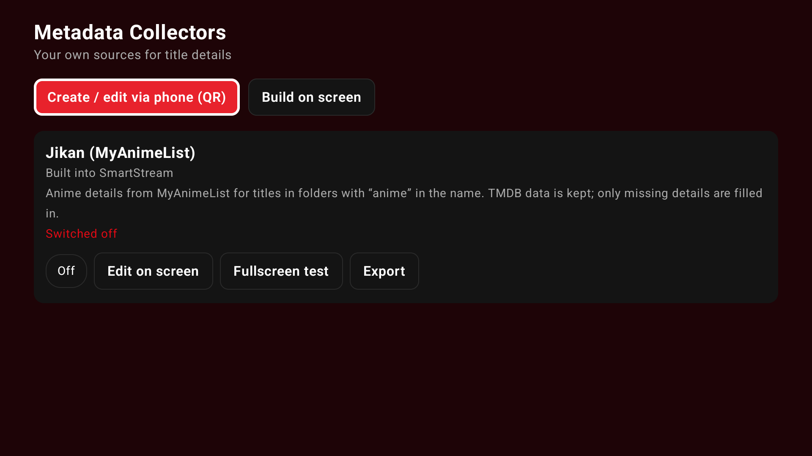
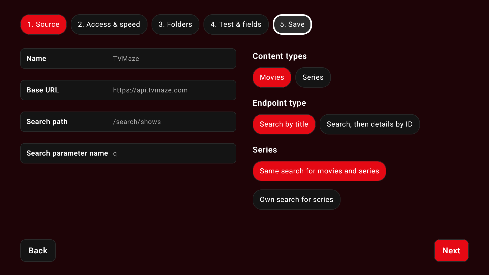
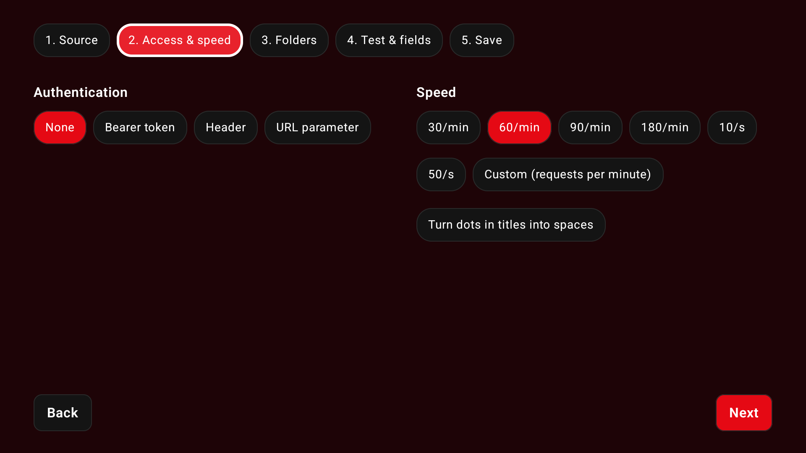
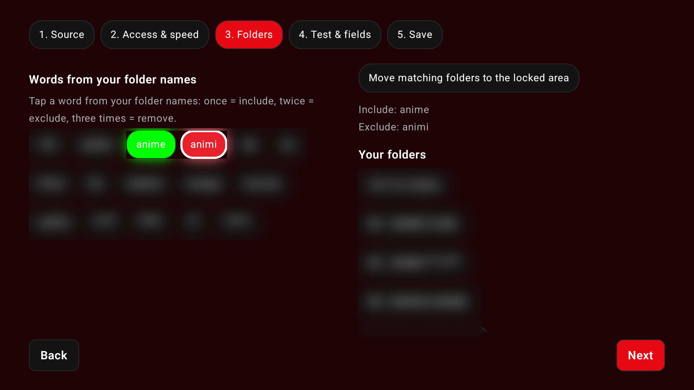
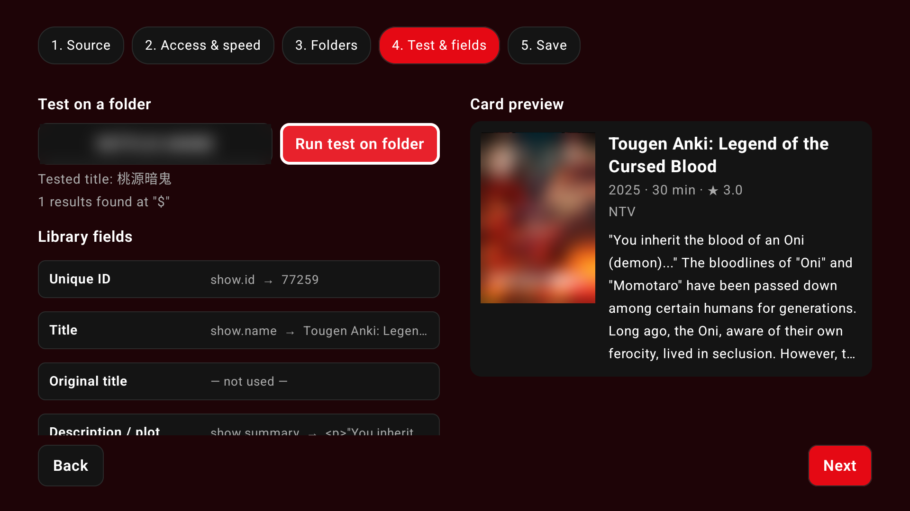
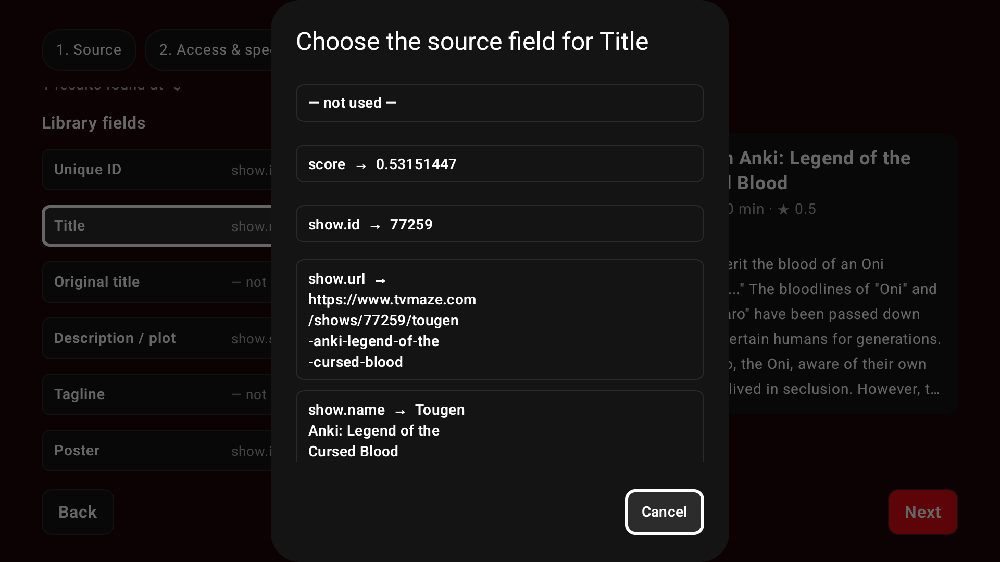
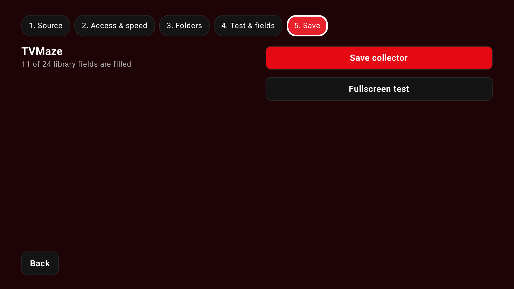
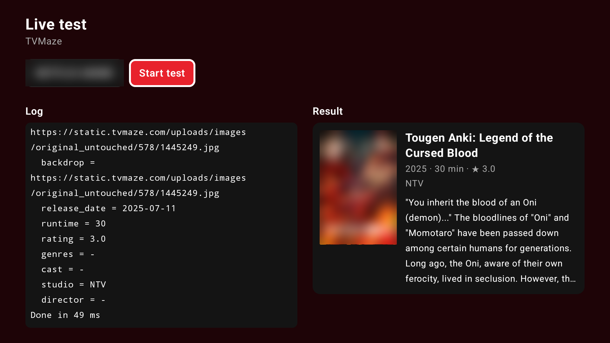

8. Metadata Collectors
A Metadata Collector is a small description of a web service (API) that SmartStream can ask for title details: posters, plot, rating, genres, cast and more. You can use the built-in anime collector, import a collector file, or build your own without typing JSON.
Metadata Collectors are in the app versions from Google Play and Amazon. TMDB stays the main source for your library; a collector only adds what you ask it to.
Where to find it
Settings → Accounts & Connections → Metadata Collectors (primary profile only).


Each collector shows Ready, Needs an API key or Switched off, and buttons for API key, Edit on screen, Fullscreen test, Export and Delete.
Built-in: anime from MyAnimeList (Jikan)
SmartStream ships one collector: Jikan (MyAnimeList). It is off until you switch it On in the overview. It is free and needs no key.
- It works on folders with anime in the name (movies and series).
- Titles TMDB already found keep all their TMDB data; the collector only fills details that are still missing.
- Titles TMDB could not find get poster, plot, rating, genres, studio and episode count from MyAnimeList.
- The work runs quietly in the background after each scan, at most 45 requests a minute. Every title is asked once.
- To use other folder words, choose Edit on screen, change step 3 and save. Your copy replaces the built-in one; delete your copy to go back.
Create or edit with your phone (QR)
Typing web addresses with a remote is slow. Choose Create / edit via phone (QR) and scan the code. Phone and TV must be on the same Wi-Fi; everything sent between them is encrypted with a key that only travels inside the QR code.

- Import / Export: choose a .json file or paste the JSON, add the API key if needed and tap Install on TV. Collectors already on the TV can be downloaded or opened for editing.
- Build / Edit: fill in name, base URL, search path and search parameter, pick authentication and speed, tap words from your TV's folder names, then Run test on folder.
- The TV takes a real title from that folder, asks the source and sends back every field it found with an example value. Each library field gets a dropdown; SmartStream already picks a good guess.
- Change any dropdown and the card preview updates on the phone and on the TV. Tap Save on TV or Download .json.


Build on the TV screen (5 steps)
Choose Build on screen. Almost everything is chosen with the remote; text fields open the keyboard only when you press OK.
- 1. Source: name, base URL, search path and the name of the search parameter. Choose content types, whether there is a details request by ID, and whether series use their own search.
- 2. Access & speed: no key, bearer token, header or URL parameter, the API key, and a speed: 30, 60, 90 or 180 per minute, 10 or 50 per second, or your own value. SmartStream starts slower, speeds up after six good answers and slows down by itself when the source says it is busy.
- 3. Folders: tap words from your own folder names: once = include (green), twice = exclude (red), three times = remove. A collector with folder words only handles those folders.
- 4. Test & fields: pick one of your folders and choose Run test on folder. Then select any library field to choose which source field fills it; the card preview on the right updates at once.
- 5. Save: shows how many fields are filled and any problems. Choose Save collector or Fullscreen test.






Fullscreen live test
The log on the left shows each step: the search text, the request, the answer time, the result that was picked and every field. On the right you see the finished card as it will look in your library.

Separate searches for movies and series
Many sources search movies and series in different places. In step 1 choose Own search for series and enter the series path. Test once with a movie folder and once with a series folder; each search keeps its own field choices.
API keys, export and backup
API keys are stored encrypted on the TV and are never written into an exported collector file, so you can share a file safely. With Cloud Sync on, your collectors, their keys and the on/off state of the built-in collector are saved in your household backup, encrypted with your sync PIN.
All library fields
These are the fields a collector can fill. The key is used in the mapping of a collector file.
| Field | Key | What SmartStream does with it |
|---|---|---|
| Unique ID | id | Stable library id that never clashes with TMDB |
| Title | title | Decodes HTML characters and trims |
| Original title | original_title | Decodes HTML characters and trims |
| Description / plot | overview | Removes HTML tags such as <p> |
| Tagline | tagline | Removes HTML tags such as <p> |
| Poster | poster | Accepts fallbacks (a|b) and image objects |
| Background image | backdrop | Uses the poster when no background exists |
| Trailer (video link) | trailer | Plain text |
| Release date / year | release_date | Also fills the year (YYYY) |
| Runtime (minutes) | runtime_minutes | Reads 120, "120 min", "2h 5m" or PT2H5M |
| Runtime (seconds) | runtime_seconds | Divided by 60 into minutes |
| Rating | rating | Shown as 7.8; 0–100 scales become 0–10 |
| Vote count | vote_count | Whole number; a list is counted |
| Popularity / score | popularity | Number |
| Genres / tags | genres | Joins arrays like tags[*].name, removes duplicates |
| Studio / network | studio | Joins arrays like tags[*].name, removes duplicates |
| Director | director | Joins arrays like tags[*].name, removes duplicates |
| Cast (names) | cast_names | Joins arrays like tags[*].name, removes duplicates |
| Cast (photos) | cast_photos | Photo per cast member, in the same order as the names |
| Age rating | mpaa_rating | Plain text |
| Language code | language | Plain text |
| Series status | status | Plain text |
| Number of seasons | total_seasons | Whole number; a list is counted |
| Number of episodes | total_episodes | Whole number; a list is counted |
Writing field paths
a.b— a field inside an objecta|b— use b when a is emptylist[*].name— every name in a list$— the answer itself is the result list
Placeholders in paths and parameters: {query}, {year}, {id}, {api_key}.
Examples
TVMaze (series, free, no key). Results are the answer itself ($).
{
"schema_version": 1,
"plugin_id": "my-tvmaze",
"name": "TVMaze",
"version": 1,
"categories": [
"series"
],
"http": {
"base_url": "https://api.tvmaze.com",
"auth_type": "none",
"requests_per_minute": 60
},
"endpoints": {
"search": {
"path": "/search/shows",
"query_params": {
"q": "{query}"
},
"results_path": "$",
"mapping": {
"id": "show.id",
"title": "show.name",
"overview": "show.summary",
"poster": "show.image.original|show.image.medium",
"release_date": "show.premiered",
"runtime_minutes": "show.runtime",
"rating": "show.rating.average",
"genres": "show.genres",
"studio": "show.network.name",
"language": "show.language",
"status": "show.status"
}
}
},
"folder_rules": [
{
"include": [
"kids"
]
}
]
}Jikan / MyAnimeList (anime, free, no key). This is the built-in collector, shortened; movies and series use type=movie and type=tv.
{
"schema_version": 1,
"plugin_id": "my-anime",
"name": "Jikan (MyAnimeList)",
"version": 1,
"categories": [
"movie",
"series"
],
"http": {
"base_url": "https://api.jikan.moe/v4",
"auth_type": "none",
"requests_per_minute": 45
},
"endpoints": {
"search": {
"path": "/anime",
"query_params": {
"q": "{query}",
"type": "movie",
"sfw": "true"
},
"results_path": "data",
"mapping": {
"id": "mal_id",
"title": "title_english|title",
"overview": "synopsis",
"poster": "images.jpg.large_image_url",
"release_date": "aired.from|year",
"rating": "score",
"genres": "genres[*].name",
"studio": "studios[*].name"
}
},
"search_series": {
"path": "/anime",
"query_params": {
"q": "{query}",
"type": "tv",
"sfw": "true"
},
"results_path": "data",
"mapping": {
"id": "mal_id",
"title": "title_english|title",
"overview": "synopsis",
"poster": "images.jpg.large_image_url",
"release_date": "aired.from|year",
"rating": "score",
"genres": "genres[*].name",
"studio": "studios[*].name",
"total_episodes": "episodes"
}
}
},
"folder_rules": [
{
"include": [
"anime"
]
}
]
}OMDb (movies and series, free key from omdbapi.com). The key goes in the URL parameter apikey; details are fetched by IMDb ID.
{
"schema_version": 1,
"plugin_id": "my-omdb",
"name": "OMDb",
"version": 1,
"categories": [
"movie",
"series"
],
"http": {
"base_url": "https://www.omdbapi.com",
"auth_type": "query",
"auth_query_param": "apikey",
"requests_per_minute": 30
},
"setup": {
"requires_api_key": true
},
"endpoints": {
"search": {
"path": "/",
"query_params": {
"s": "{query}",
"y": "{year}"
},
"results_path": "Search",
"mapping": {
"id": "imdbID",
"title": "Title",
"poster": "Poster",
"release_date": "Year"
}
},
"details": {
"path": "/",
"query_params": {
"i": "{id}",
"plot": "full"
},
"mapping": {
"overview": "Plot",
"runtime_minutes": "Runtime",
"rating": "imdbRating",
"vote_count": "imdbVotes",
"genres": "Genre",
"director": "Director",
"cast_names": "Actors",
"mpaa_rating": "Rated",
"language": "Language"
}
}
}
}Rules for collectors
- Only use sources you are allowed to use, and follow each source's own terms and request limits.
- Collectors for illegal content or for sexual content are not allowed. Do not create, share or use them with SmartStream.
- SmartStream ships no collectors for such sources and has no collector store.